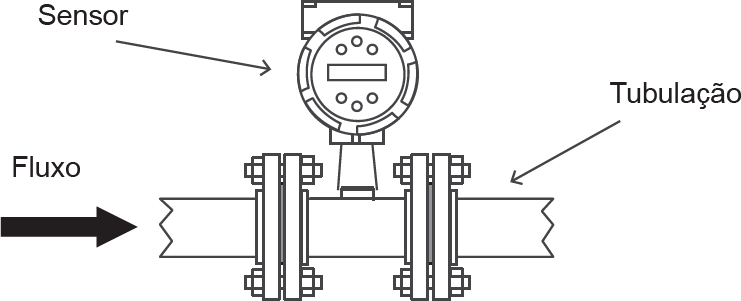

A figura abaixo representa um sensor de vazão de vórtice volumétrico (composto por transdutor e transmissor) instalado em uma tubulação para medição de vazão de água que abastece uma caldeira, na qual é arbitrado um sentido de fluxo. Esse sensor pode ser adquirido na configuração 4-20 mA/0-20 m³/h ou 0-10 V/0-20 m³/h.
CONTECH. Contech Séries M22 e M23 medidores de vazão de vórtice volumétrico Pro-V: modelo M22-V e modelo M23-V. © 1997. Disponível em: http://www.contechind.com.br. Acesso em: 28 jul. 2014.
Nesse contexto, avalie as afirmações a seguir.
É correto apenas o que se afirma em